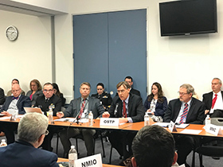

Why the CMTS Matters
CMTS Background

The U.S. Committee on the Marine Transportation System (CMTS) is a Federal maritime policy coordinating committee which is chaired by the Secretary of Transportation. The purpose of the CMTS is to create a partnership of Federal departments and agencies with responsibility for the MTS. The authority to establish the CMTS was first derived from a directive in the U.S. Ocean Action Plan [https://rosap.ntl.bts.gov/view/dot/63229], issued December 17, 2004: "Supporting Marine Transportation." The CMTS was later authorized in the Coast Guard and Maritime Transportation Act of 2012, as amended), (PL 112-213), (46 U.S.C.A. § 55501). The CMTS shall serve as a federal interagency coordinating committee for the purpose of:
- Assessing the state of the MTS through a conditions and performance report
- Promoting MTS integration with other modes of transportation and marine environment uses
- Coordinating, improving the coordination of, and making recommendations related to MTS relevant federal policy
- Develop a summary of the Federal role in the MTS
By charter, the CMTS is chaired by the Secretary of Transportation. Much of the day-to-day policy coordination and work plan establishment are handled by the sub-Cabinet "Coordinating Board" of agency heads and key office directors, including the White House. Over 25 Federal agencies and offices are engaged in the Coordinating Board, and the membership is growing. In 2014, the Marine Mammals Commission and the National Maritime Intelligence Integration Office were added to the roster.
The activities of the CMTS are guided by the 14 recommendations laid out in the 2017-2022 National Strategy for Marine Transportation System (system performance, safety, security, energy innovation, and infrastructure investment) and by emerging issues (resilience/big data/Arctic transportation/ veteran's hiring). The yearly approved work plan is implemented through integrated action teams and task teams, agency leadership, and staff support. When an issue does not fall neatly within the purview of a single agency's authority or when efficiencies can be gained by leveraging expertise from multiple agencies around a common goal, the CMTS can be a valuable tool for engagement.
The marine transportation system is essential to the American economy; it supports millions of American jobs, facilitates trade, moves people and goods, and provides a safe, secure, cost-effective, and energy-efficient transportation alternative. The CMTS is working to ensure that the MTS continues to meet the present and future needs of our nation. This interagency collaboration has resulted in a safer, more secure, environmentally friendly, and efficient MTS.
Leadership
In addition to the leadership of the Secretary of Transportation, day-to-day management and policy guidance is provided by the CMTS Coordinating Board. The Coordinating Board is made up of the heads of MTS-related agencies. More than twenty-five different agencies and departmental offices with MTS interests are represented on the Coordinating Board. [https://www.cmts.gov/organizational-structure/].
As directed in statute, the Chair of the Coordinating Board rotates annually between the Secretaries of Transportation, Defense, Commerce, and Homeland Security. The Secretary of Transportation annually asks for a designee to the position from the Secretary next in rotation. The Board meets quarterly to consider, approve, and review the CMTS work plan. Work plan tasks are carried out by task teams, or Integrated Action Teams. All CMTS activities are aligned with the current CMTS National Strategy for the Marine Transportation System.
The Executive Secretariat is the staff office that supports the activities of the CMTS, Coordinating Board, and task teams. [under "Topics/Projects"] The Executive Director of the CMTS leads the staff office and acts as the Executive Secretary of the Coordinating Board. CMTS member agencies provide additional expert staff support to the Executive Secretariat and interagency teams.
While not directed in the CMTS charter or in statute, the Executive Secretariat operates a "working group" through which multi-agency staff participation and work efforts are encouraged and managed. The working group meets monthly. The work plan tasks are proposed, led, and supported by the member agencies.
Website Disclaimer